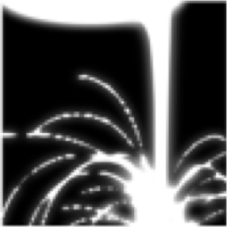

Interaktives Spezifizieren und Verifizieren von Softwareartefakten SE5021
Model Finding und Model Checking mit Alloy
Mit der Prädikatenlogik kann man Strukturen präzise spezifizieren, auch die Dynamik, d.h. die Transitionen in Softwaresystemen kann man logisch beschreiben durch die Spezifikation der Struktur von Zustand und Folgezustand. Model Finding bedeutet das Generieren von Modellen für die Spezifikationen. Mit temporaler Logik werden erwünschte oder unerwünschte Eigenschaften dynamischer Systeme formuliert. Model Checking besteht darin, zu überprüfen ob solche Eigenschaften in gegebenen Modellen erfüllt sind oder nicht.
Alloy ist eine Sprache mit der man Strukturen und ihre Transitionen sowie temporale Eigenschaften spezifizieren kann. Der Alloy Analyzer visualisiert die spezifizierten Modelle und erlaubt so interaktives Spezifizieren und Verifizieren.
Inhalt
- Erste Begegnung mit Alloy 6
- Zum Anfang ein (leichtes) Rätsel
- Spezifikation und Verifikation des Echo-Algorithmus
- Prinzipien des formalen Designs mit Alloy 6
- Design der Struktur eines Systems in Alloy
- Konzepte am Beispiel der Spezifikation eines Dateisystems
- Relationale Logik
- Design der Dynamik eines Syste4ms in Alloy
- Konzepte am Beispiel der Spezifikation eines verteilten Algorithmus
- Temporale Logik
- Interessante Beispiele von Spezifikationen mit Alloy
- ??? -- noch auszuarbeiten
Materialien
| Burkhardt Renz: Die Hard in Electrum. THM, Juni 2021 Portable Document Format, 728 KB, Stand 28.06.2021 |
|  | Burkhardt Renz: Quelle zu Die Hard in Electrum. Juni 2021 Alloy Source, 1 KB, Stand 27.06.2021 |
| Burkhardt Renz: Quellen zum Echo-Algorithmus. November 2021 Zip Archivdatei, 6 KB, Stand 24.11.2021 |